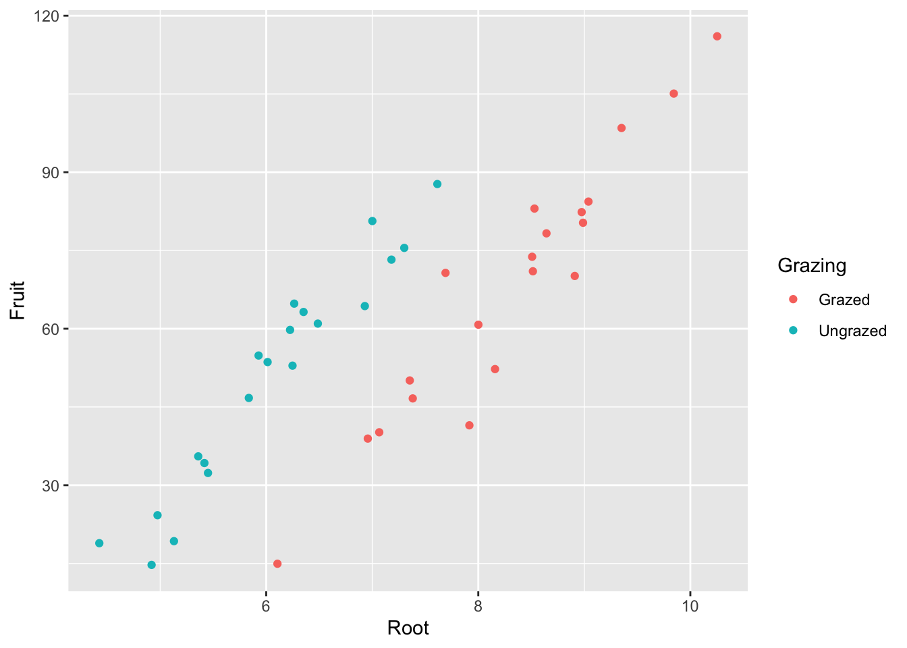

8 Chapter 8: Pimping Your Plots
install.packages("ggplot2", repos = "https://cran.us.r-project.org")
install.packages("dplyr", repos = "https://cran.us.r-project.org")
install.packages("gridExtra", repos = "https://cran.us.r-project.org")
urlfile08a="https://raw.githubusercontent.com/apicellap/data/main/compensation.csv"
compensation<-read.csv(url(urlfile08a))
head(compensation)## Root Fruit Grazing
## 1 6.225 59.77 Ungrazed
## 2 6.487 60.98 Ungrazed
## 3 4.919 14.73 Ungrazed
## 4 5.130 19.28 Ungrazed
## 5 5.417 34.25 Ungrazed
## 6 5.359 35.53 UngrazedCreate base scatterplot:
eg_scatter <- ggplot(compensation, aes(x = Root, y = Fruit)) +
geom_point()
eg_scatterCreate base boxplot:
eg_box <- ggplot(compensation, aes(x = Grazing, y = Fruit)) +
geom_boxplot()
eg_boxRender blank background:
eg_scatter + theme_bw()Arrange plots with gridExtra:
grid.arrange(
eg_scatter, eg_box,
nrow =1) #specifies the arrangement Change axes’ bounds:
Add text to plot:
eg_scatter + annotate("text",
x=c(6,8), #6 and 105 are the x,y coordinates for placing the label
y=c(105,25),
label = c("here","there"))Modify axis scales:
eg_scatter +
scale_x_continuous(limits = c(4,11), #bounds
breaks = 4:11) #tick marks at 1 step between the bounds
ggplot(compensation, aes(x = Root, y = Fruit,
color = Grazing)) + #need to add the color to aes for scale_color_manual() to function
geom_point() +
scale_color_manual(values = c(Grazed = "brown", Ungrazed = "green"))Transform the scale:
eg_box + scale_y_continuous(breaks = seq(from = 10, to = 150,
by = 20), #vector breakpoints that call for ticks
trans = "log10") #log transformation of y axisModifying the theme:
eg_scatter +
theme(
panel.background = element_rect(fill = NA, colour = "black"), #backgrounds is white
panel.grid.minor = element_blank(), #no minor gridlines
panel.grid.major = element_line(colour = "lightblue") #gridlines are blue
)Modify elements of the x axis:
eg_box +
theme(
axis.title.x = element_text(color = "cornflowerblue",
size = rel(2)), #relative increase above the default setting
axis.text.x = element_text(angle = 45, #angle of x axis labels
size = 13,
vjust =0.5 ) #scoots labels down a bit; can accept values from 0-1
)Modify axis labels (categorical variables):
eg_box +
scale_x_discrete(limits = c("Ungrazed", "Grazed"), #limits refer to variables in the dataframe
labels = c("Control", "Grazed")) #labels() corresponds to the limits and lets you change them without altering the dfModify legend:
ggplot(compensation, aes(x = Root, y = Fruit, color = Grazing)) +
geom_point() +
theme(legend.key = element_rect(fill = NA)) #removes box around the legend 